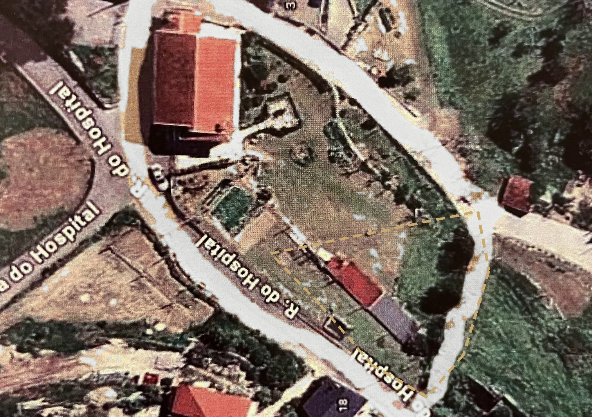
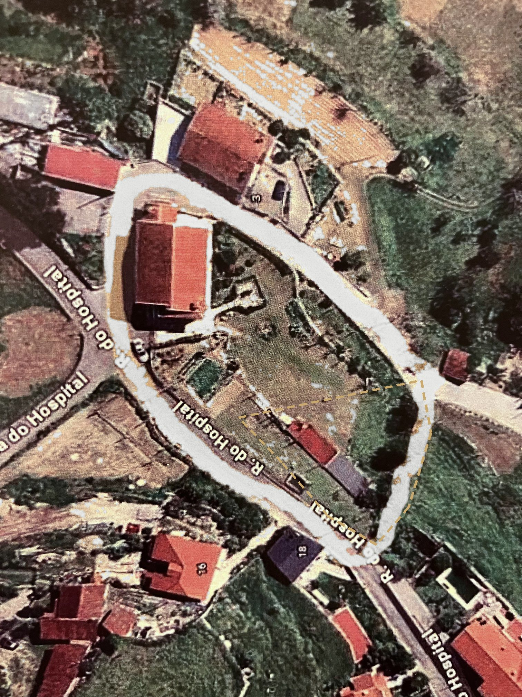

Escudeiros · Braga
Lote plano para moradia isolada
700 m²lote
Planopronto a projetar
≈ 280 m²de construção
Preço99 000 €
Ref. ESC-700
O terreno
Na Rua do Hospital, entre moradias

Zona residencial a sul de Braga, com acesso rápido ao centro e à variante.
Área700 m²
PDMSolo urbano (2026)
CondicionantesSem RAN nem REN
AcessoRua do Hospital
TopografiaPraticamente plano
Ideal paraMoradia isolada
Lote resultante de destaque de um prédio com 2 241 m². Certidão de destaque e registo concluídos antes da escritura.
O que pode construir
Uma moradia isolada, com jardim
Moradia14 × 10 m
Altura2 pisos
Construção≈ 280 m²
Impermeávelaté 60 %
Entrada direta pela Rua do Hospital, casa junto à frente do lote e jardim a sul e nascente. Sendo plano, poupa em muros e terras.
Esquema preliminar, sem valor de projeto. Afastamentos de 5 m à via e 3 m às estremas, a confirmar. PDM de Braga, 3.ª revisão, art. 66.º e 67.º.
Mercado
Construir em Braga, onde a procura continua
O preço mediano da habitação em Braga ronda os 2 090 €/m² (INE). As moradias T3 novas nos arredores anunciam-se entre 1 770 e 2 400 €/m².
Por m² de construção≈ 350 €Para uma moradia de 280 m².
Área700 m²Maior do que os lotes habituais da zona.
Preço99 000 €Lote plano, pronto a projetar.
| Referência | Fonte | Valor |
|---|---|---|
| Preço mediano da habitação, Braga | INE | 2 090 €/m² |
| Moradias T3 novas nos arredores | anúncios | 1 770–2 400 €/m² |
| Lotes para moradia em Escudeiros | anúncios | 470–600 m² |
Marque a sua visita
+351 913 440 800paineltematico@gmail.com
Documento informativo, sem valor contratual. Áreas e parâmetros indicativos, a confirmar junto da Câmara Municipal de Braga. Valores de referência: INE e anúncios, novembro de 2026.